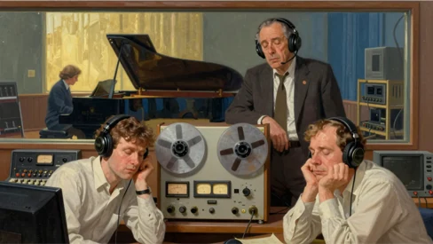

A sitar playing its lowest note.
A magnetic tape. Spooled. 15″ per second.
Beneath it all? The hiss. Always. Inevitable.
Ray Milton Dolby.
Circa 1933. Portland, OR.
Son of Esther Eufemia and Earl, an inventor.
Could. Not. STAND IT.
1963. Chandigarh ↔ New Delhi. India. Foot-hills of the Himalayas.
Wet cement. Sun-bleached. Curing plaster. Dying engine oil.
Turpentine. Wild grass. Dust. Eucalyptus. Rain on hot brick.
He was thirty years old. A technical advisor for the United Nations. On the weekends, he’d haul heavy recording equipment into small rooms to capture sitar players performing traditional music. Every playback? Electronic static.
The audio industry had a name for it: tape hiss. A technical term for annoyance.
Engineers shrugged. Accepted it like you accept the weather. Tolerable.
Dolby found that compromise...unacceptable.
As a teen in the ‘50s? He’d worked for Ampex. American electronics. Made in Cali, USA.
He collaborated on the videotape recorder. The world’s first. Before finishing college.
He knew exactly how magnetic tape worked. And its flaws.
The obvious solution? Standard audio equalizers → kill the static = the hiss disappeared.
So did the music. The sitars? Sounded like they were being played under a wool blanket.
You couldn’t remove the noise without removing the art.
Engineering manuals stated the problem plainly: pushing beyond 60 decibels signal-to-noise ratio = mathematically impossible without degrading the master.
The static? A permanent tax on the medium.
1965. Fulham. London. UK.
Damp soot. Stale ale. Fish & chips in newsprint. Petrol.
Back-alleys. Cobblestones. Peeling paint. Single-pane glass.
Dolby left his UN post and rented an unheated laboratory. Cold. Damp. Unforgiving.
He stopped trying to filter the sound after it was recorded.
Instead? He decided to trick the tape before the music ever touched it.
The solution? A circuit. Splits incoming audio into four separate bands.
Loud music? The circuit did nothing.
A whisper? The quietest notes artificially boosted just before they hit the tape.
On playback, a mirror circuit turned the volume back down by the exact same margin.
The hiss? Crushed into inaudibility.
The music? Untouched.
A handful of patents. A pile of debt.
No corporate backing. No manufacturing facility.
The first prototype weighed 40 lbs.
A heavy metal box no one asked for.
During an early demonstration?
A capacitor overloaded. Filled the control room with smoke.
Two executives walked out before the tape finished.
A studio in Soho → Too...complicated.
A broadcaster in West London → Unnecessary.
Then? Decca Records agreed to a test session.

Vladimir Ashkenazy. Playing Mozart.
The playback started. The engineers? Leaned forward.
The space between the notes? Completely silent. The first time in history.
Decca ordered nine machines on the spot.
Dolby wasn’t finished. Compact cassettes arrived.
Record executives dismissed them as novelty toys.
Narrow tape. Atrocious audio. Deafening hiss.
Dolby stripped his studio system down to a single chip.
Suddenly: cheap plastic cassette = vinyl record clarity.
Next up? Cinema. No audio evolution since 1927.
Millions spent on picture quality. Paired with AM-radioesque sound.
Proprietary decoders? Theater owners resisted. “Audiences didn’t care.”
Then. In 1977. A science fiction film encoded with Dolby’s circuits hit theaters.
When an Imperial Star Destroyer flew overhead audiences didn’t hear it. They felt it.
Theater owners who’d refused? Suddenly faced lines of angry customers.
By the following year? The industry had surrendered.
Today, digital software removes noise with a click.
The machinery is obsolete. The cassettes are in landfills. The patents have expired.
But when the lights go down in a theater?
And the audience sees the double-D logo?
The room goes still.
Ray Dolby. The man who taught the world to hear silence.